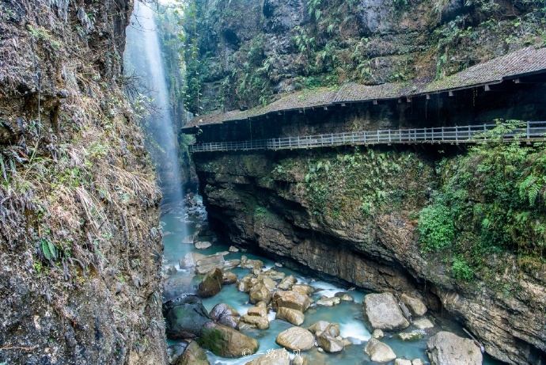
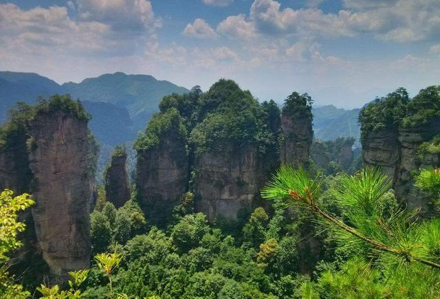
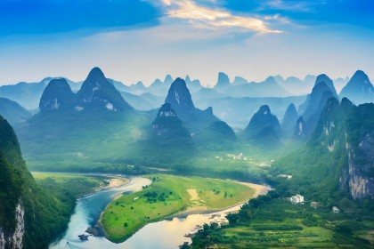

Welcome to my world!
Hello,everybody!My name is Tony and I come from Ningbo, Zhejiang. I am a sophomore student. I studied computer application technology in a Sino foreign cooperative program in college. In my spare time, I like playing play badminton and football. At the same time, I also enjoy traveling and watching sports games to enhance my strength and charm.
About Me

Hello,everybody!My name is Gnosis and I come from Ningbo, Zhejiang. I am a student. I like play vedio games and print.
Popular Post
  Follow Me
Exploring Yunnan and Encountering the Integration of Nature and Culture
Travel is a captivating experience that takes us to far-off places. It opens our eyes to diverse cultures and landscapes
enriching our understanding of the world. Each trip is a new adventure, filled with exciting discoveries and unforgettable memories.
discoveries and unforgettable memories. Travel not only broadens our horizons but also strengthens our appreciation for life's beauty and diversity.
This trip to Yunnan has allowed me to deeply experience the beauty of the integration of nature and culture. Here, I have experienced the magnifiatural scenery, felt a strong cultural atmosphere, and made many enthusiastic friends. This trip not only brought me beautiful memories, but also gave me a deeper reflection on life. I believe that in the days to come, I will continue to move forward with this beautiful memory and insight, exploring more unknown worlds.cent n